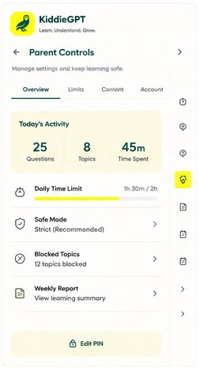

They try with support
Hints and explanations help kids keep moving without taking over the work.
KiddieGPT gives your child one friendly place to understand a lesson, practice with flashcards and quizzes, get guided math help, and build confidence—at a level that fits their grade.

Learning support that grows confidence
You shouldn’t need to relearn fifth-grade fractions at 8:30 p.m. KiddieGPT gives your child patient, age-aware support—while keeping you in the loop.
Hints and explanations help kids keep moving without taking over the work.
Grade settings, safe modes, and parent controls make the experience feel intentional.
Review, flashcards, and quick practice turn a one-time answer into something that sticks.
KiddieGPT meets kids where the question happens, then guides them from understanding to practice.
Open a webpage, choose a file, paste a question, or scan a worksheet from a phone.
Get a grade-safe explanation, guided steps, or a read-aloud lesson.
Turn the material into flashcards and quizzes that build real recall.
KiddieGPT accepts web pages, PDFs, phone scans, and screenshots, then helps children create explanations, Study Missions, read-aloud tutoring, flashcards, and quizzes.
A screenshot can become a clear explanation. A PDF can become a Study Mission. Kids can listen, review, or quiz themselves—whatever helps the lesson click.
KiddieGPT guides kids from understanding to remembering to checking their confidence—so practice feels purposeful, not overwhelming.
Build a study pack from a page or file, review key ideas, then quiz for confidence.
KiddieGPT breaks down the problem and lets kids reveal the answer when they’re ready.

Read aloud with highlighting, or turn a passage into a short lesson in kid-friendly words.

Use the active page, a selection, or a screenshot and keep asking until it clicks.

Set up KiddieGPT for your child’s grade and your family’s comfort level. Parent tools stay behind a PIN, so settings remain yours.

Kids can understand the lesson, work through a problem, listen at their own pace, or ask one more question—without jumping between apps.
Turn a web page, PDF, or scan into a guided session with a focused read, flashcards, and a short quiz.
Understand · Review · CheckSee each step with a plain-language “why.” The final answer stays hidden until a child is ready to check.
Hints · Steps · Answer gateFollow highlighted text as it’s read aloud, or hear a short explanation in a calm tutor voice.
Read aloud · Highlight · ReplayUse a page, a selected passage, or a screenshot and keep asking questions until the idea makes sense.
Page · Selection · ScreenshotNo. It’s a guided learning extension built around schoolwork and reading. Kids can bring in the page, file, screenshot, or problem they’re working on, then explain, study, practice, or ask follow-ups.
KiddieGPT is designed to prioritize understanding: it can break work into steps, offer hints, explain concepts, and keep final answers hidden until a child is ready to check their thinking.
KiddieGPT is designed primarily for kids ages 8–14. Parents choose the appropriate grade level so language, examples, and explanations are better matched to the child.
Parent settings are protected by a PIN and include grade level, content safeguards, usage boundaries, and activity visibility. Your child can use the learning tools without changing those settings.
KiddieGPT works as a Chrome extension alongside the web. It can help with active pages, selected text, uploaded files, screenshots, pasted questions, and compatible phone scans.
Visit the KiddieGPT app, create your parent account, choose your child’s grade level and safety settings, and start exploring the learning tools together.
Set up your parent account and give your child a calmer way to learn.